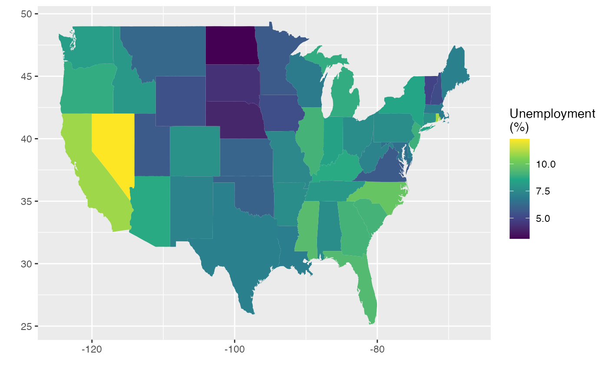
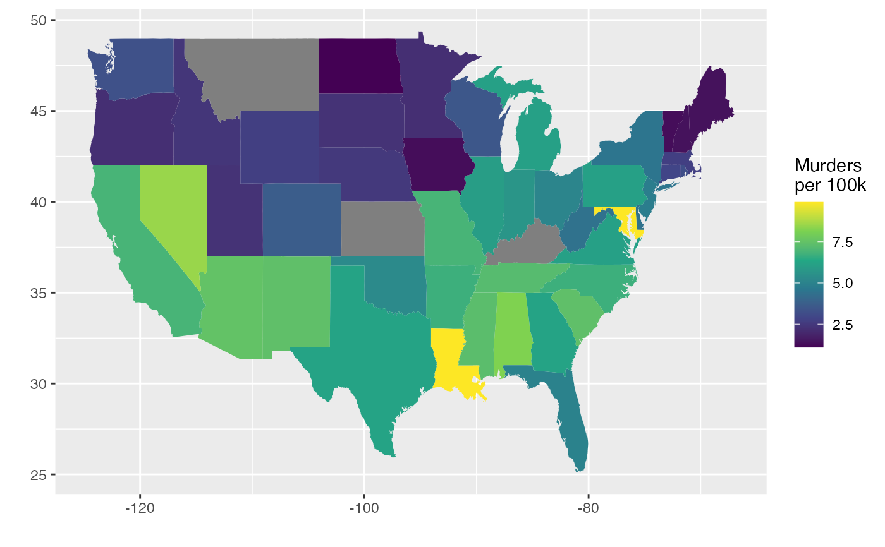
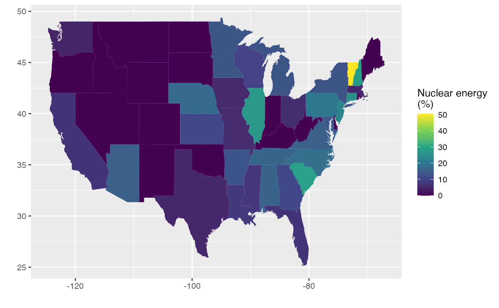

Information about each state collected from both the official US Census website and from various other sources.
Format
A data frame with 51 observations on the following 23 variables.
- state
State name.
- abbr
State abbreviation (e.g.
"MN").- fips
FIPS code.
- pop2010
Population in 2010.
- pop2000
Population in 2000.
- homeownership
Home ownership rate.
- multiunit
Percent of living units that are in multi-unit structures.
- income
Average income per capita.
- med_income
Median household income.
- poverty
Poverty rate.
- fed_spend
Federal spending per capita.
- land_area
Land area.
- smoke
Percent of population that smokes.
- murder
Murders per 100,000 people.
- robbery
Robberies per 100,000.
- agg_assault
Aggravated assaults per 100,000.
- larceny
Larcenies per 100,000.
- motor_theft
Vehicle theft per 100,000.
- soc_sec
Percent of individuals collecting social security.
- nuclear
Percent of power coming from nuclear sources.
- coal
Percent of power coming from coal sources.
- tr_deaths
Traffic deaths per 100,000.
- tr_deaths_no_alc
Traffic deaths per 100,000 where alcohol was not a factor.
- unempl
Unemployment rate (February 2012, preliminary).
Source
Census Quick Facts (no longer available as of 2020),
InfoChimps (also no longer available as of 2020),
National Highway Traffic Safety Administration,
(tr_deaths, tr_deaths_no_alc),
Bureau of Labor Statistics
(unempl).
Examples
library(ggplot2)
library(dplyr)
library(maps)
states_selected <- state_stats %>%
mutate(region = tolower(state)) %>%
select(region, unempl, murder, nuclear)
states_map <- map_data("state") %>%
inner_join(states_selected)
#> Joining, by = "region"
# Unemployment map
ggplot(states_map, aes(map_id = region)) +
geom_map(aes(fill = unempl), map = states_map) +
expand_limits(x = states_map$long, y = states_map$lat) +
scale_fill_viridis_c() +
labs(x = "", y = "", fill = "Unemployment\n(%)")

# Murder rate map
states_map %>%
filter(region != "district of columbia") %>%
ggplot(aes(map_id = region)) +
geom_map(aes(fill = murder), map = states_map) +
expand_limits(x = states_map$long, y = states_map$lat) +
scale_fill_viridis_c() +
labs(x = "", y = "", fill = "Murders\nper 100k")

# Nuclear energy map
ggplot(states_map, aes(map_id = region)) +
geom_map(aes(fill = nuclear), map = states_map) +
expand_limits(x = states_map$long, y = states_map$lat) +
scale_fill_viridis_c() +
labs(x = "", y = "", fill = "Nuclear energy\n(%)")
